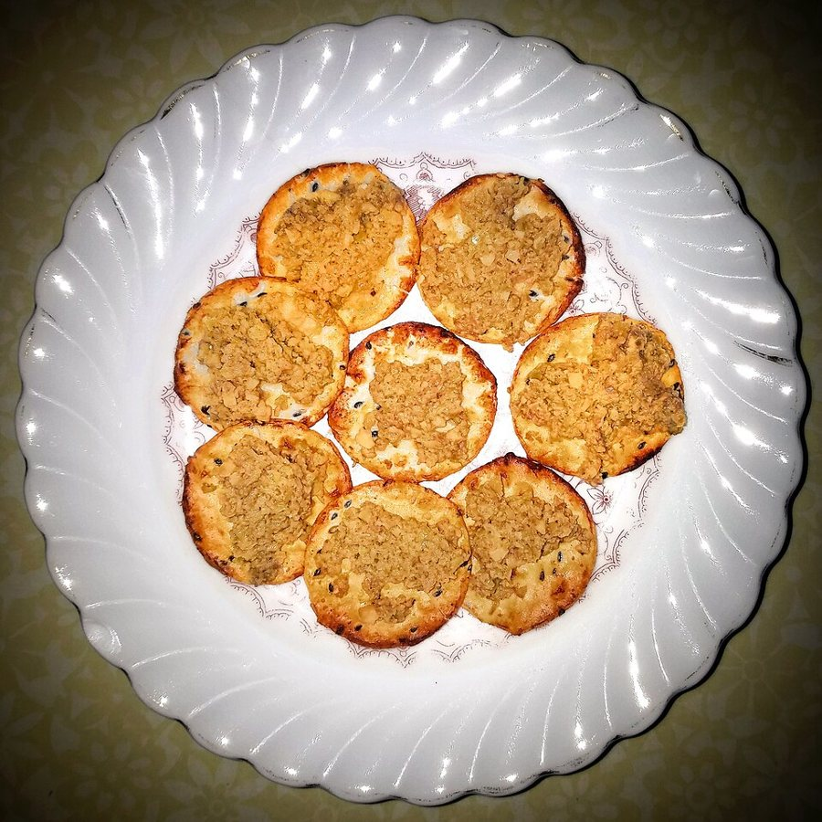
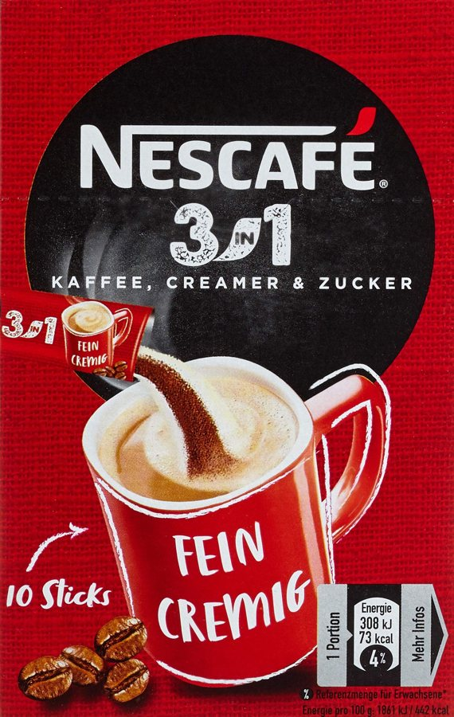
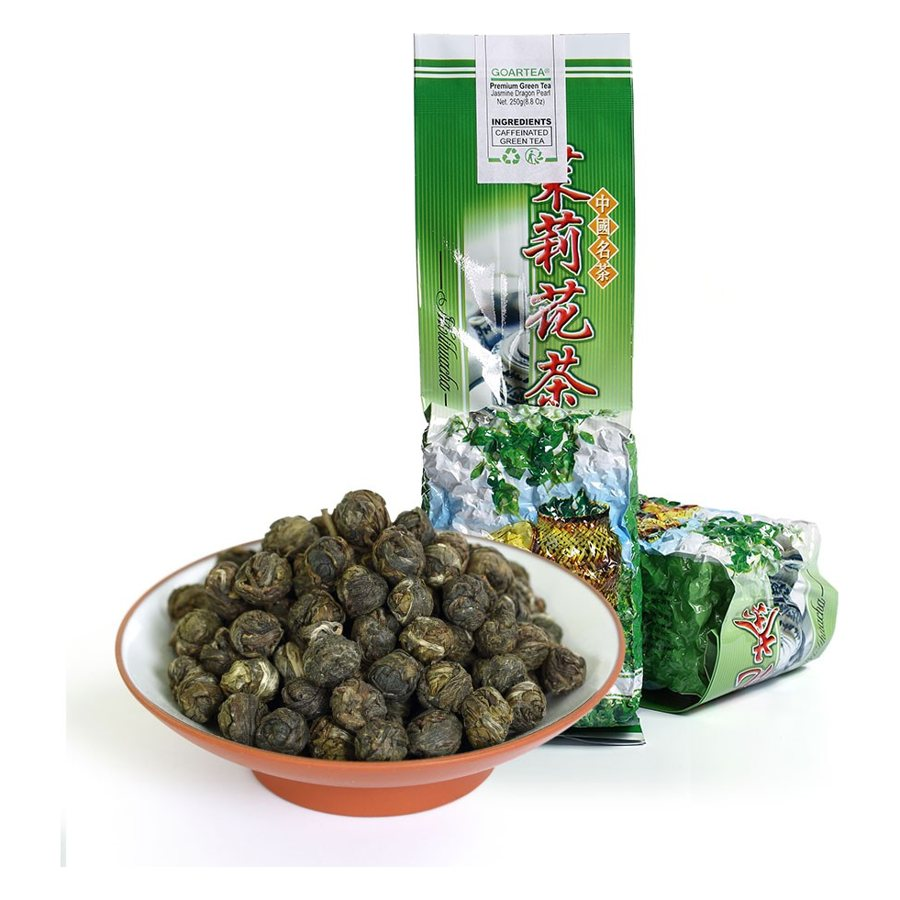

Home / Food & Convenience / Iced tea / tea drink, 500 ml PET bottle

Illustration similar – shows the product type.
Food & Convenience
Iced tea / tea drink, 500 ml PET bottle
Ready-to-drink tea beverage in 500 ml PET bottles for drinks supply on construction sites.
Tea drink (iced tea) in 500 ml PET bottles for drinks supply on construction sites and in break rooms. A stable, clear taste without sediment, tightly closed bottles with tethered caps and a clean ingredient list are expected. In Germany single-use plastic beverage bottles carry a mandatory deposit and must be registered in the LUCID packaging register and take part in the deposit system (DPG). Additives, sugar declarations and the PET food-contact material must be documented under EU law.
Technical data
| Volume | 500 ml |
|---|---|
| Type | Black or green tea drink, sweetened or unsweetened |
| Sugar content | sweetened approx.; 5-8 g/100 ml, unsweetened 0 g/100 ml |
| Packaging | PET bottle with tethered cap |
| Pack size | Carton of 12-24 bottles |
| Preservation | Hot-fill or pasteurised |
| Customs tariff number (HS) | 22029919 |
EU standards and regulations
VO (EG) 178/2002General Food Law, traceabilityVO (EU) 1169/2011Food Information to Consumers Regulation, labellingVO (EG) 1333/2008Food additivesVO (EU) 10/2011Plastic food contact materials (PET)RL (EU) 2019/904Single-use plastics Directive (tethered caps)VerpackGGerman Packaging Act: deposit, system participation, LUCID registration
Goes well with
More products in this category

Jasmine green tea, loose leaf (bulk)

Instant noodles, braised beef flavour (bag, approx. 105 g)Bagged instant noodles with beef seasoning as a quick hot meal for the site, only hot water needed.

Rice crackers (senbei style), bag

Jasmine / long-grain rice, white (5-25 kg sack)White long-grain aromatic rice in sacks for site catering, canteens and repacking.

Bottled drinking water, still (0.5 l PET)Still bottled water in 0.5 l PET bottles for supplying site crews.

Instant coffee 3-in-1 (sticks / bag)Soluble coffee mix of coffee, dairy ingredients and sugar for break rooms, site tea kitchens and canteens.

Jasmine pearl tea 'Dragon Pearls' (hand-rolled green tea, 100 g tin/bag)Hand-rolled jasmine tea pearls made from young buds and scented with jasmine blossoms: the premium tier above loose jasmine green tea.

Sour-and-hot instant glass noodles (corn/sweet potato starch, bowl approx. 105 g)Instant glass noodles in a bowl with a sour-and-hot Sichuan seasoning and a separate chili-oil sachet: the trend variant of instant noodles without meat broth.

Chopped tomatoes in can, 400 g

Pickled gherkins in jar (vinegar/brine)Pickled baby cucumbers 3–6 cm, 400–850 g jar.

Tomato ketchup, 500 g PET squeeze bottle

Chocolate wafer bars (filled wafer), cartonFilled chocolate/hazelnut wafer bars, individually wrapped.

Sweet paprika powder, bulk (60–260 ASTA)Ground paprika by ASTA colour value, by the tonne.

Roasted coffee beans, Yunnan Arabica

Tortilla corn chips, tube/can

Potato crisps in tube (160 g)